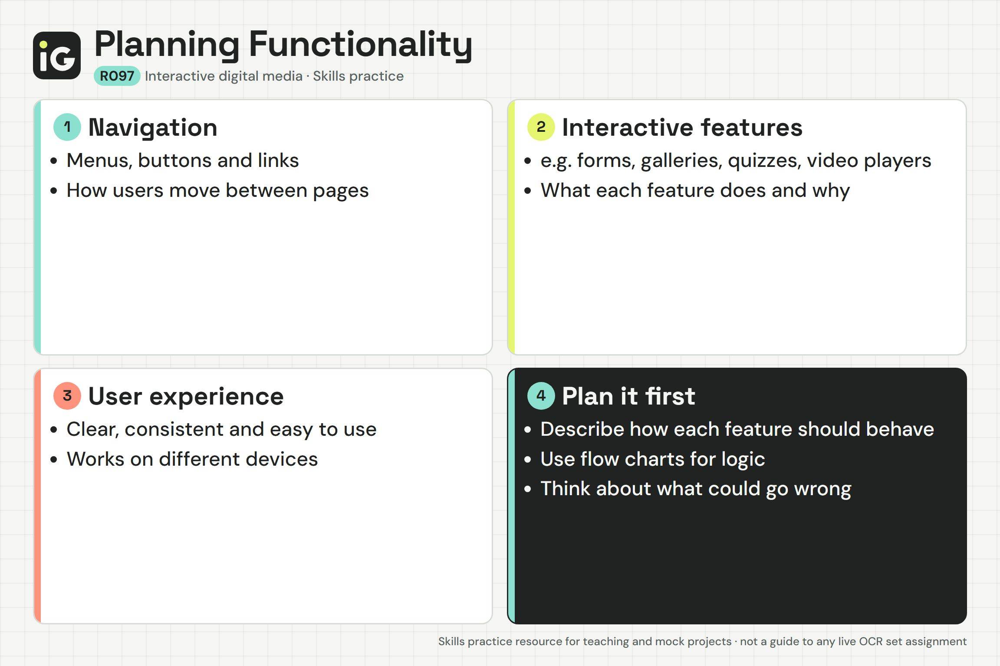

Effective GUI
- Consistent layout and house style
- Clear typography and white space

Show how the website will work (navigation + interactivity).
Use this checklist to make sure you can cover every part of this topic.
Touch and gesture suit phones and kiosks; click suits computers; voice and motion suit hands-free use. Every action should give feedback and a sense of closure.